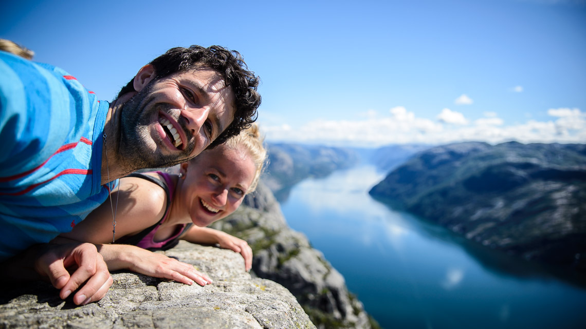

Me giftar oss 17. juni i Manger kyrkje
Brattetaule gård ligg 7 minutt biling unna Manger kyrkje. Før middagen vert det høve til å leika seg på garden. Ulike spel og aktivitetar vil vera tilgjengelege. Ta med sko som du kan gå på graset med.
Utpå kvelden opnar me dansegolvet. Ta med deg dine beste moves og dansesko. Me vil og anbefala å ta med ein god og varm genser eller jakke.
Har du lyst til å sei noko, ha eit innslag eller noko anna finurleg? Ta kontakt med ein av visevartane:
Bryllaupet vårt finn stad på Radøy, nord for Bergen. Dette er øya der Magnar vaks opp. Manger kyrkje ligg midt på øya, 50 minutt køyring frå Bergen. Det er dessverre ingen bussar som passar bra for transport verken til vigsla eller kaffien, eller heim igjen på kvelden. Me vil setja opp ei Facebook-gruppe der folk kan planleggja samkøyring. Nabobil er eit godt tips for dei som ikkje har eigen bil.
For dei som ynskjer overnatting, har me reservert nokre rom på Alver Hotel. Det tar omkring 18 minutt å køyra frå Brattetaule gård til Alver Hotel. Oppgje Lillian Birkeland som referanse ved bestilling. Enkeltrom kostar 1320kr, og dobbelrom kostar 1520kr.
For andre overnattingsalternativ, finst det mange hotell i Bergen sentrum (rundt tre kvarter køyretid). Her vil det vera mogeleg å finna rimelegare overnatting enn på Alver Hotel.